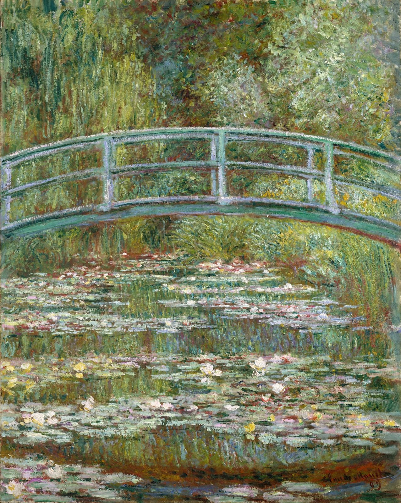
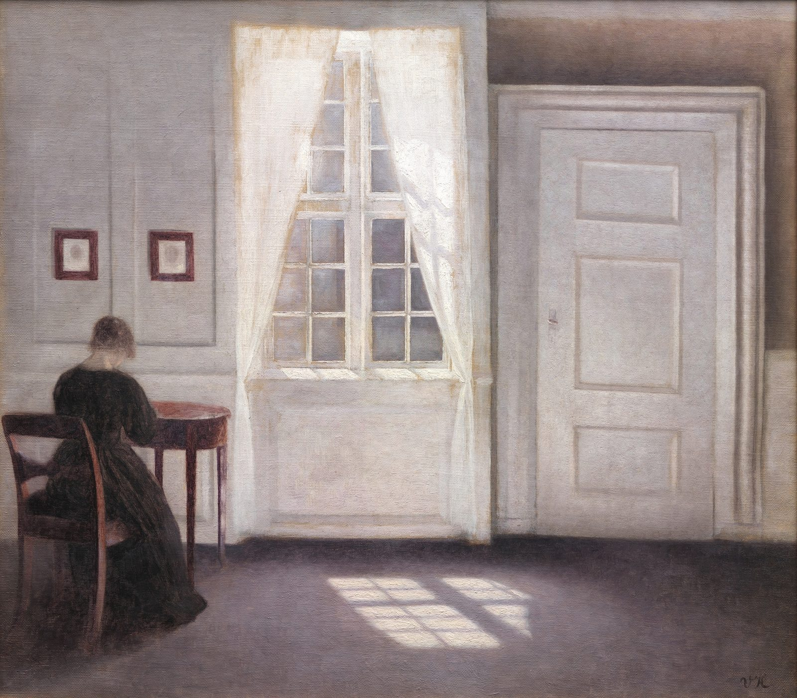
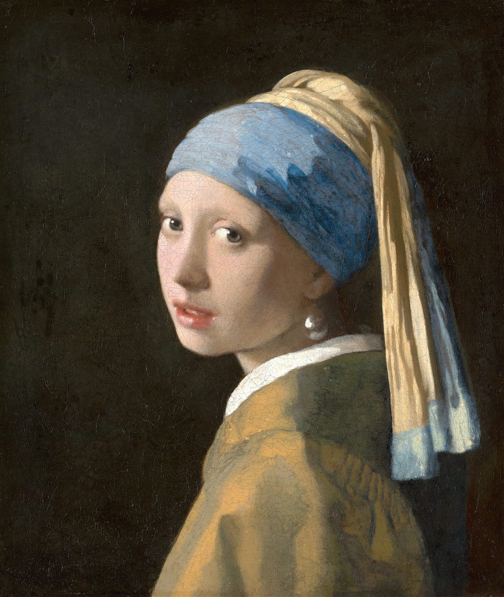

Jacques Bodin
Fruits XI · Huile sur toile · 100 × 100 cm
Édition 1/27Procédé breveté · Éditions limitées
Procédé Champollion®
Elle est imprimée sur feutre, sans vitre ni vernis. Sa surface est mate et ne renvoie pas la lumière.

Une photo sous verre reflète la fenêtre, la lampe et la personne qui la regarde. Le feutre Champollion absorbe la lumière au lieu de la renvoyer. On ne voit que l'image.
Comparer
À gauche, un tirage brillant classique. À droite, une reproduction Champollion. La lumière éclaire les deux, mais seul le tirage brillant la reflète. Faites glisser l'image pour comparer. Avec une souris, la lumière suit le curseur.

Simulation à l'écran. Pour voir le rendu réel, nous présentons les œuvres sur demande.
En photo
Deux reproductions Champollion encadrées, photographiées sur place.


Le procédé

L'original est numérisé en très haute définition. Les coups de pinceau et le grain de la toile restent visibles.
L'image est imprimée sur un feutre très mat, qui ne fait aucun reflet.
Le procédé d'impression a été mis au point par la société Actimage, après plusieurs années de recherche. Il est breveté.
Chaque œuvre est tirée en série limitée et numérotée, puis encadrée. Elle arrive prête à accrocher.
Applications
Pour les photographes et leurs collectionneurs.
En séries limitées et numérotées, en accord avec les artistes.
Pour les salons, les événements et les points de vente.
La collection
Fruits XI · Huile sur toile · 100 × 100 cm
Édition 1/27Les Iris, 1889 · Huile sur toile

Avant la course, v. 1887–1889
Barber, 2022 · Huile sur toile · 51 × 120 cm

Le Bassin aux nymphéas, 1899 · Huile sur toile

Intérieur, Strandgade, 1901 · Huile sur toile

Opéra Garnier · Tirage photographique · 80 × 120 cm

Pilatus airport, 2010 · Acrylique · 130 × 97 cm

Foyer-entrée, 2020 · Huile sur toile · 42 × 100 cm

Loire Princesse · Tirage photographique · 80 × 120 cm

Opéra Garnier II · Tirage photographique · 80 × 120 cm
Repaire de Bacchus, 2016 · Huile sur toile · 95 × 110 cm

The Rebirth of (hyper)realism, 2022 · Huile sur toile · 100 × 100 cm

La Joconde, 1503–1506 · Huile sur bois · 53 × 77 cm

La Jeune Fille à la perle, v. 1665 · Huile sur toile

Nymphéas, 1916–1919 · Huile sur toile

Tauben, 2020 · Huile sur toile · 80 × 100 cm

Tomate, 2020 · Huile sur toile · 80 × 100 cm

Auto collection (141) · Tirage photographique · 60 × 90 cm

Avion · Tirage photographique · 60 × 90 cm
Mises en situation
Dans un hall au soleil, une chambre ou une galerie sous spots, un tirage brillant reflète la lumière. Une reproduction Champollion se démarque.


Halls, couloirs, chambres. Des séries limitées qui restent lisibles quel que soit l'éclairage, avec la même sélection d'un étage à l'autre.
« Un tableau original a un seul propriétaire. Une édition Champollion peut en avoir une vingtaine. »
Le procédé permet à plus de monde d'accrocher chez soi une peinture ou une photographie d'art.
Projets & présentations
Architectes, décorateurs, hôteliers : nous vous présentons les œuvres sur place et nous choisissons avec vous les formats, les séries et l'accrochage.
David Genevier
Fondateur du procédé Champollion
contact@champollion.art +33 6 14 69 46 77 Actimage